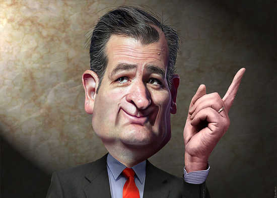

Hello!
With so many choices available to you, it's really hard to choose someone to lead you. Well we are here to provide information on our three most beloeved candiates.
Candiate List
- Carly "The Big P" Fiorina
- Ted "Teddy" Cruz
- Donald "No" Trump
We know it isn't easy, but we have put together a comprehensive site for you. We have a little light hearted look at our candidates before you dig in!
